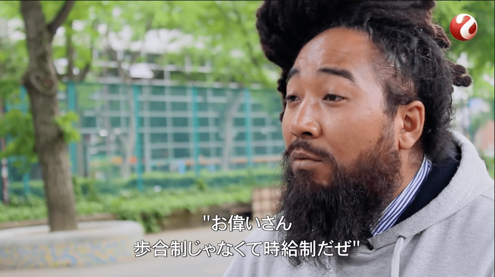
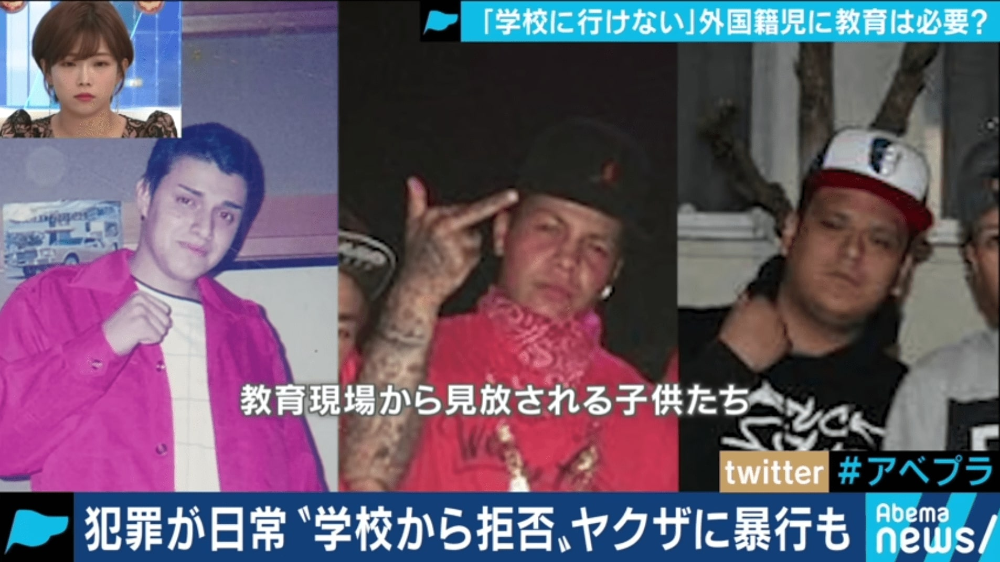

<a-scene
  xrextras-gesture-detector
  landing-page
  xrextras-loading
  xrextras-runtime-error
  renderer="colorManagement:true"
  xrweb="disableWorldTracking: true">
  <a-assets>
    
    
    <video id="v1-video" crossorigin="anonymous" loop="false" src="./../../assets/flyer/v1.mp4"></video>
    <video id="v2-video" crossorigin="anonymous" loop="false" src="./../../assets/flyer/v2.mp4"></video>
  </a-assets>

  <a-camera position="0 4 10" raycaster="objects: .cantap" cursor="fuse: false; rayOrigin: mouse;"></a-camera>
  <a-light type="directional" intensity="0.5" position="1 1 1"></a-light>
  <a-light type="ambient" intensity="0.7"></a-light>

  <xrextras-named-image-target name="v1">
    <xrextras-target-video-sound video="#v1-video" thumb= "#v1-img" height= "3" width= "5"></xrextras-target-video-sound>
  </xrextras-named-image-target>
  <xrextras-named-image-target name="v2">
    <xrextras-target-video-sound video="#v2-video" thumb= "#v2-img" height= "3" width= "5"></xrextras-target-video-sound>
  </xrextras-named-image-target>
</a-scene>